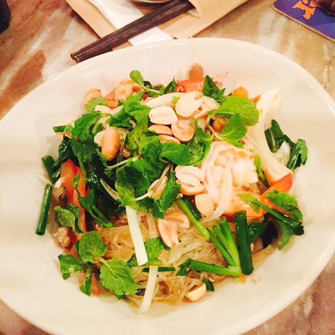

Địa chỉ bán đồ ăn Thái ngon tuyệt ở Sài Gòn
Bạn là một tín đồ chót “nghiện” đồ ăn Thái nhưng lại không thể lúc nào cũng ở Thái Lan thì làm sao để thỏa mãn được “cơn nghiện đồ ăn Thái” ? Đừng lo, bạn có thể dễ dàng tìm được những món ăn như pad Thái, rồi tomyum, gỏi đu đủ hay là xôi xoài và cả rất nhiểu món ăn khác tại các địa chỉ bán đồ ăn vặt Thái Lan ở Sài Gòn. Hãy cùng Toplist khám phá các địa điểm bán đồ ăn Thái ngay thôi!
Ở Sài Gòn không thiếu những cửa hàng, những chuỗi thương hiệu chuyên bán đồ Thái, tuy nhiên phải đến khi strong Tuk Thai Bistro xuất hiện, người ta mới trầm trồ lên "đây rồi, món Thái thật sự phải là đây!" Khó khăn để tìm chỗ là thế nhưng bù lại chất lượng đồ ăn của Tuk Tuk rất ổn. Menu của quán đầy đủ, đậm chất Thái. Món ăn tại quán nêm nếm vừa miệng, ăn một phần pad Thái hay tomyum ở Tuk Tuk mà cứ ngỡ mình đang ở trung tâm Bangkok không thôi. Là nhà hàng Thái sang trọng, Tuk Thai Bistro mang đến những món Thái đa dạng với chất lượng tuyệt hảo nhất. Món ăn tại TukTuk cũng thật “Bistro” như phong cách của quán: giản đơn không cầu kỳ, không pha trộn, phần ăn nhỏ gọn và nhanh chóng. Bắt nguồn từ những món ăn đường phố đặc trưng của xứ sở Chùa Vàng, mỗi món ăn tại đây luôn khiến bạn bất ngờ bởi sắc thái gia vị vô cùng đa dạng: Mắm Thái mặn mà, cay nồng tỏi ớt, chua chua xoài xanh, thơm lừng lá chanh Kaffir, nồng nàn hương xả, giòn rụm cá trê chiên xù, sừn sựt đu đủ khô bò… cùng những món ngọt, món ăn chơi đậm chất Thái. Đến đây bạn không thể bỏ qua những món best seller của nhà hàng như Pad Thai, cơm chiên Tom Yang,...thơm ngon chuẩn hương vị gốc Thái đâu nhé. Với không gian 3 tầng rộng rãi, lối bày trí hiện đại đây chắc chắn là điểm đến lý tưởng cho những bạn yêu thích ẩm thực xứ Chùa Vàng
là nhà hàng sang trọng, Tuk Tuk Bistro mang đến những món Thái đa dạng với chất lượng tuyệt hảo nhất.
Pad Thái nổi tiếng của TukTuk